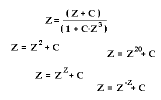
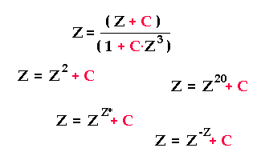
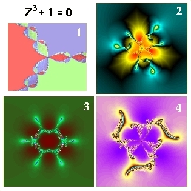

Wann
treten Fraktale in der mathematischen Rekursion (Rückkopplung) auf ?
Kompensation
für Zyklus und Rhythmus

Ob es überhaupt ein Muster
mit scharfen Grenzen gibt, hängt vom Aufbau der iterativen Funktion ab.

Mindestens eine Subtraktion
muss in der Funktion vorhanden sein, um durch Kompensation von Teilgrößen in wiederkehrende
Zyklen zu gelangen. Man beachte, dass Z und C genauso oft negative Komponenten
haben können wie positive. Und wenn Z kleiner als Eins ist, verhält
sich Z^2 wie sonst ein 1/(Z^2).
Dort, wo keine Kompensation stattfinden kann, bleiben die typischen selbstähnlichen
fraktalen Muster aus.
Um
einen Bezug zur Realität zu finden, sollte man mit realen Rückkopplungen
vergleichen. Die Addition der festen Größe C in jeder Rechnungsschleife
kann auch als fester Emmissions- oder Absorptionsbetrag pro Zeiteinheit aufgefasst
werden. Immer, wenn der addierte Betrag genau passt, um in einer der Rückkopplungen
einen früheren Wert exakt wieder zu erreichen, erscheint zyklisches Verhalten
im betrachteten Bildpunkt. Trifft ähnliches Verhalten auch auf Nachbarpunkte
zu, entstehen Linien oder Flächen gleicher Farbe, die dem gleichen Rhythmus
folgen.
Auf Rückkopplungsschaltungen in der Elektrotechnik übertragen,
müssen gewisse parallel angeordnete und in Reihe angeordnete Bauelemente zusammenwirken
(Invertierungen und Additionen), um einen interessanten Attraktor zu erzeugen.
Biosysteme und ihre organischen Strukturen, wie etwa Muskeln, Gefäße
und Nerven, sind immer gleichzeitig parallel und in Reihe angeordnet.
Rhythmisches Verhalten ist eine Grundlage von Leben, auch Rhythmen, die uns chaotisch
erscheinen, und die erst später oder nie in die Ordnung finden.
Fraktale
markieren Gebiete gleichartiger rhythmischer Bewegung infolge passender Absorption.
Es geht nicht um maximale oder minimale Absorption, sondern um passende Absorption
für stabile Pulsation und Flexibilität.
Dünne
Linien sind schmale Zahlenfenster, wie im Frequenzraum die Linien für Absorption
oder Emission. Oft schachteln sie sich ineinander, wie einzelne Spektrallinien,
die immer feiner aufspalten...
Vielfalt
durch Disharmonie mit System
In
dem eben gesehenen Fraktal wurde für die dritte Wurzel aus Eins das Newtonverfahren,
ein optimales numerisches Lösungsverfahren, benutzt, aber stark verändert.
Es wurden absichtlich Fehler eingebaut.
Die Harmonie wurde gestört, der
optimale Lösungsvorgang unterlag Beschränkungen, ihm fehlten Freiheitsgrade
der Bewegung.

Der schnellste Weg zum Ziel
wurde gestört, immer wieder verhindert, bis sich andere Lösungen ergaben, neue
Lösungen, die nicht mehr drei große Einzugsbereiche haben, die bis
nach Unendlich reichen, sondern viele kleine, in der Nähe von Null bis 5.
Vielfalt
folgt aus kleiner Disharmonie in der Nähe von Harmonie. Leben folgt aus Nichtgleichgewicht
in der Nähe von Gleichgewicht. Auch Flüssigkeiten bewegen sich, wie im
Fraktal die Zahlen, im unentschiedenen Zustand zwischen Anziehung und Abstoßung.
In Festkörpern ist dafür die Ordnung zu hoch, in Gasen zu niedrig.